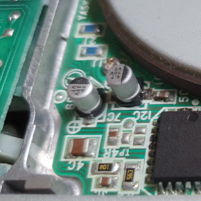
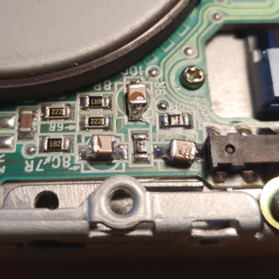

PS/2 Floppy Drive Capacitor Replacement
I was able to successfully change the SMD electrolytic capacitors on a PS/2 floppy drive used in the P70/P75 luggable computers. These capacitors are prone to leaking and may eventually cause damage to the circuit boards. The floppy drive manufacturer is ALPS and the model number is DFP723D15C. It is also marked with IBM numbers "P/N 79F3224" and "FRU P/N 79F3225". Since PS/2 floppy drives have a slightly different connector they cannot be easily replaced with a standard PC floppy drive.
Here is the list of electrolytic capacitors:
|----------------|-----|-----------------------|
|Location | ID | Value |
|----------------|-----|-----------------------|
|Interface Board | C3 | 10uF 16V |
|Interface Board | C4 | 10uF 16V |
|Interface Board | C5 | 10uF 16V |
|Interface Board | C6 | 10uF 16V |
|Interface Board | C7 | 10uF 16V |
|----------------|-----|-----------------------|
|Motor Board | 6C | 10uF 16V |
|Motor Board | 8C | 4.7uF 16V Unpolarized |
|Motor Board | 9C | 4.7uF 16V Unpolarized |
|Motor Board | 10C | 4.7uF 16V Unpolarized |
|Motor Board | 7C | 4.7uF 25V |
|----------------|-----|-----------------------|
And here is an overview image:
For replacements of the 10uF caps I used 35V rated "RND 150VVT035M100CA1L" and for the 4.7uF polarized cap a 50V rated "RND 150VVT050M4R7CA1L". I did not find any unpolarized SMD type electrolytic caps so I used ceramic caps "Murata GRJ32DC72A475KE11L" instead.
Here are some images of the replacements:


It is also worth mentioning that I had to lubricate the floppy drive as well, since it seemed to have trouble moving when I tested. I used white lithium grease on the stepper motor drive shaft and silicone grease on the plastic surfaces where the head assembly slide back and forth.